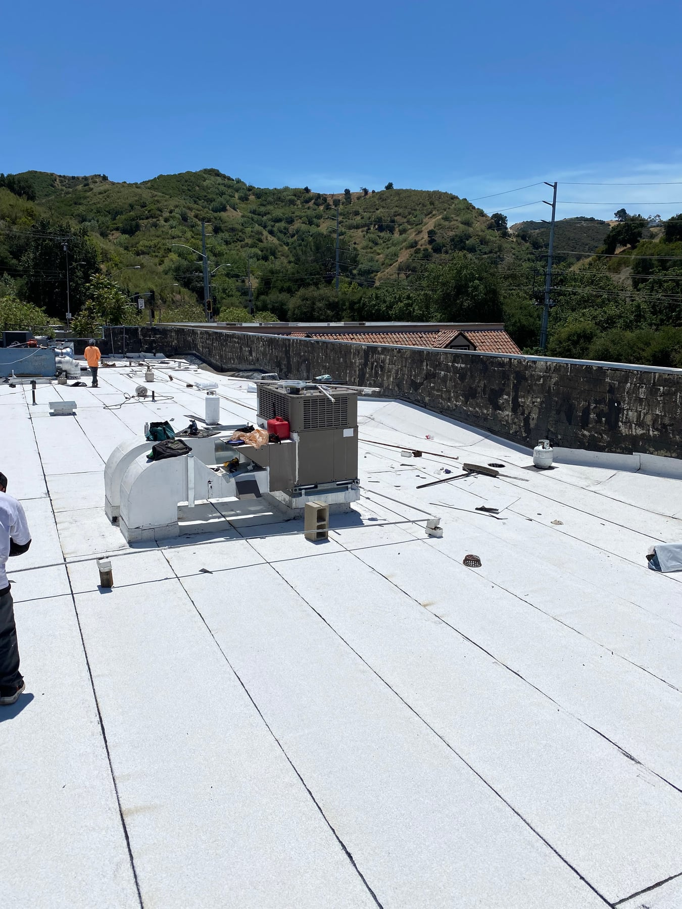
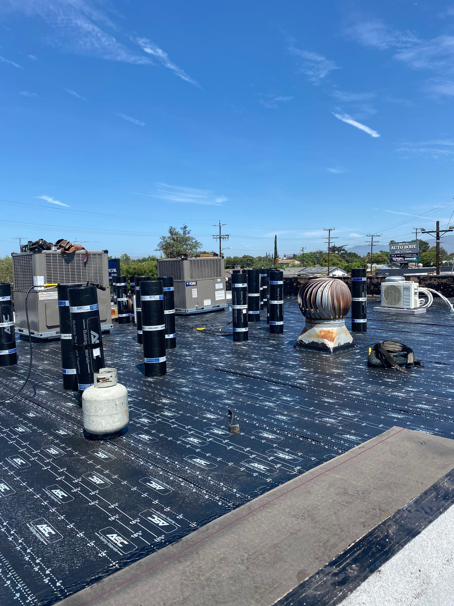
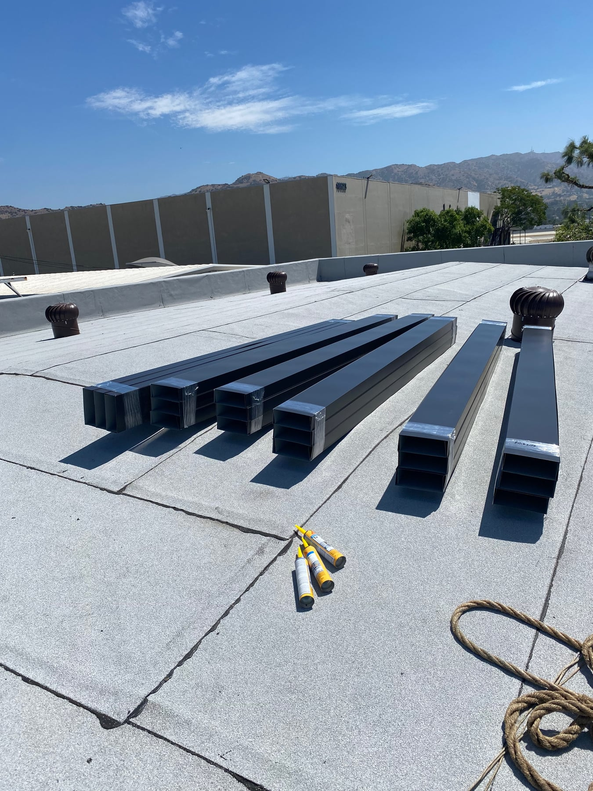

Repair & replacement planning
Review current roof concerns and consider whether targeted work or a broader replacement better suits the property.
Los Angeles roofing
A practical roofing plan for your property.
Talamantes Roofing works with commercial roofing needs ranging from a localized repair to a planned replacement. Start with a free inspection and a conversation about the roof, access, and your business schedule.

Commercial roofing
Commercial roofing work can involve equipment, access routes, tenants, and activity below the roof. Share those details early so they can be considered in the proposed scope and schedule. We can discuss repair, replacement, flat roofing, and waterproofing options based on the condition of the existing roof.
Review current roof concerns and consider whether targeted work or a broader replacement better suits the property.
Discuss the roof areas around equipment, vents, perimeter walls, and connections to adjoining surfaces.
Explain any access limits, tenant coordination, or scheduling considerations when you request your estimate.
What to expect
Describe the building, roofing concerns, and any restrictions that affect work on the property.
Review the inspection findings and discuss the roof areas, materials, and details involved in the proposed work.
Talk through the work schedule and property contacts so there is a clear point of communication.
From our project gallery
These photos show separate projects, not a before-and-after sequence.


Yes. Arrange a free roof inspection and explain the issues you are seeing. The inspection can inform a discussion of repairs, replacement, or waterproofing for the existing roof.
Share your operating hours, access restrictions, and any tenant requirements with the team. Timing and coordination can then be discussed for the specific project; availability and the work required will affect the plan.
Talamantes Roofing serves Los Angeles, Orange County, Ventura, and San Bernardino. Call with the property location and the type of roofing work you need.
Based in Los Angeles. Serving Los Angeles, Orange County, Ventura, and San Bernardino.
Available daily, 6 a.m.–6 p.m.